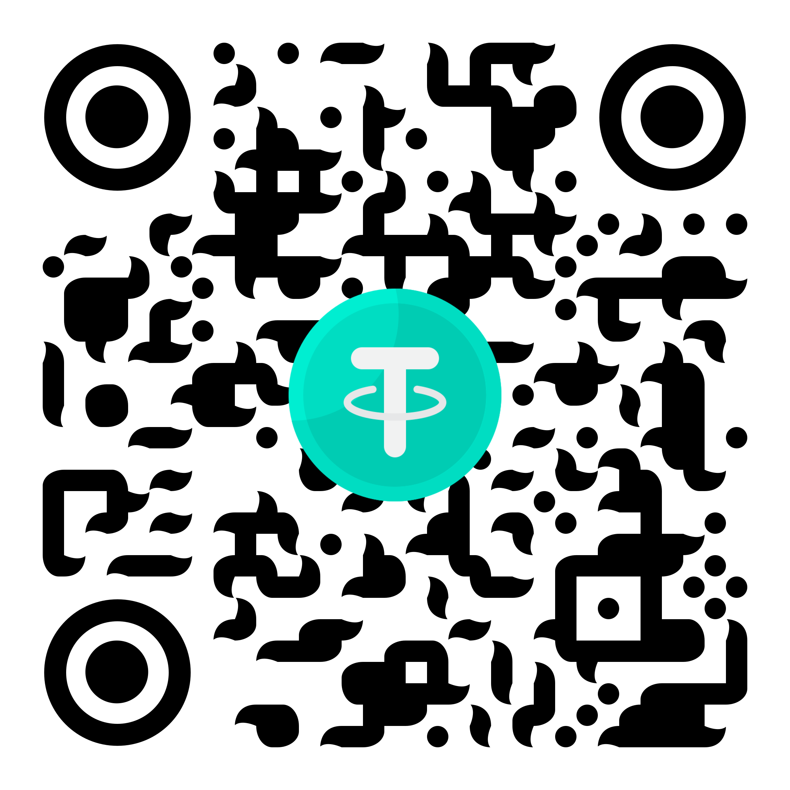
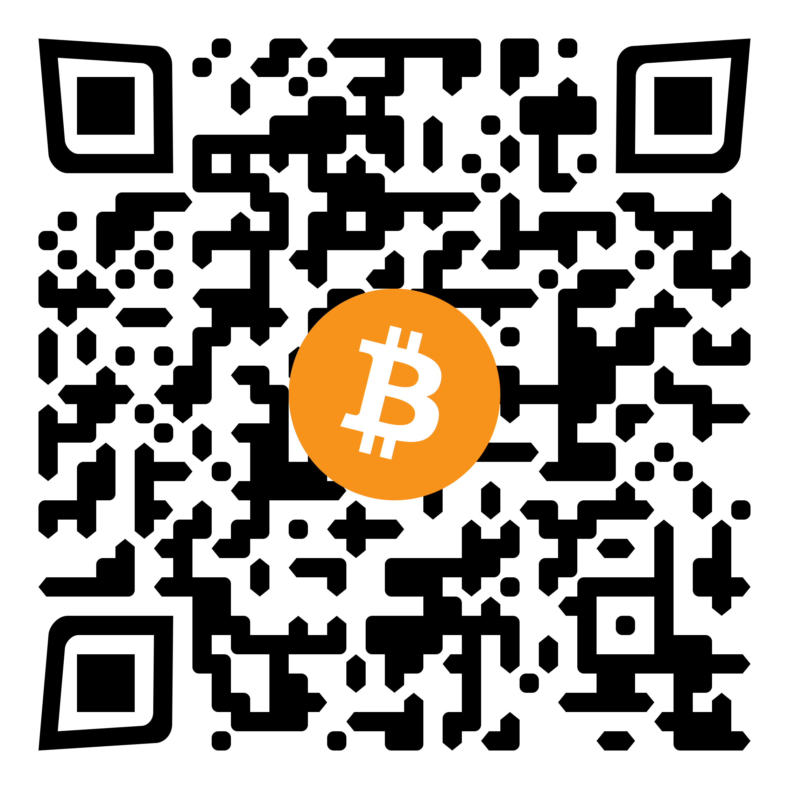
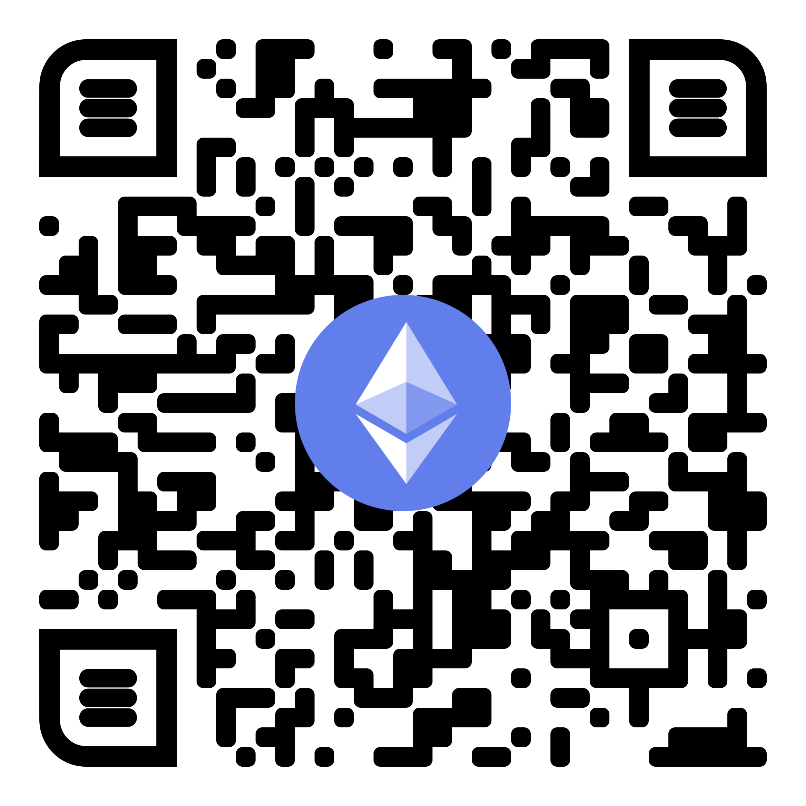
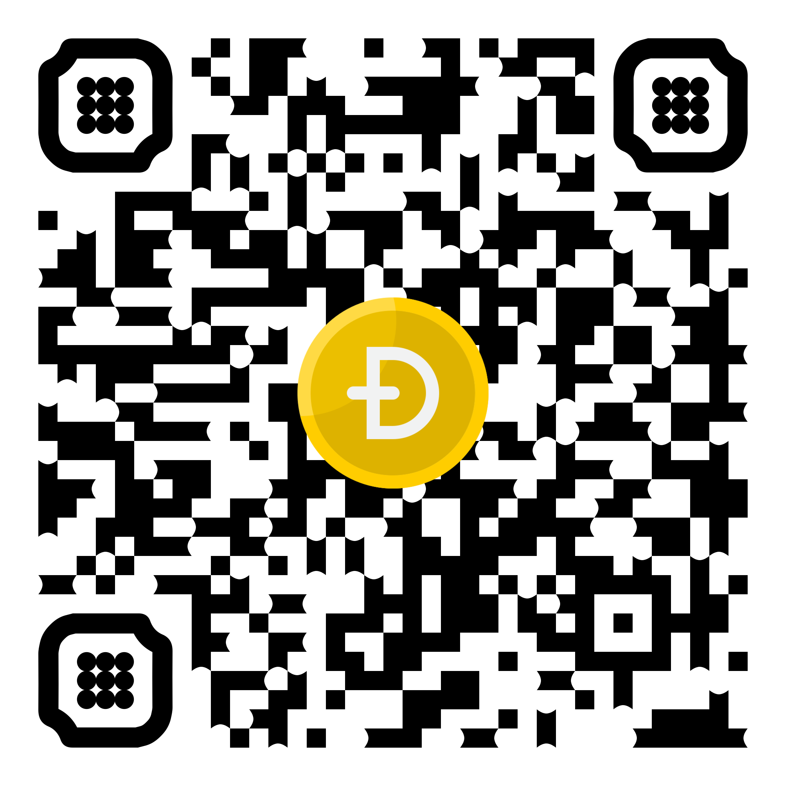

Donate
Making a donation is ultimate sign of solidarity. Actions speak louder than words.
Ibrahim Hooper

USDT
Tether is a cryptocurrency built on top of the Bitcoin blockchain. It is pegged to the value of other fiat currencies, like USD. They sell themselves as "100% backed" by fiat because every USDT unit is supposedly equivalent to $1. It is meant to function as a stable medium for transactions across currencies when customers are not trading with fiat currencies directly, so it is pegged 1:1 to the US dollar. Tether can be sent and received with an address like any other cryptocurrency, but unlike most cryptocurrencies tether is not divisible. The smallest unit of Tether is 1 USDT. Tether, like all cryptocurrencies, runs on blockchain technology. It operates using the Omni Layer protocol. All transactions are recorded on the Tether blockchain, and stored in Tether's database. It works much like Bitcoin. Anyone can make transactions with the cryptocurrency using it to pay for goods or services in which they are accepted. Tether can be bought on most cryptocurrency exchanges, including Binance, CoinSpot, BitFinex, Kraken and Bittrex. However, Tether is only available to buy with Bitcoin, Ethereum, and USD and cannot be bought directly with USD. Instead, you must first purchase Bitcoin or Ethereum and then use that to purchase tether.

BTC
Bitcoin (BTC) is a cryptocurrency, a virtual currency designed to act as money and a form of payment outside the control of any one person, group, or entity, thus removing the need for third-party involvement in financial transactions. It is rewarded to blockchain miners for the work done to verify transactions and can be purchased on several exchanges. Bitcoin was introduced to the public in 2009 by an anonymous developer or group of developers using the name Satoshi Nakamoto. It has since become the most well-known cryptocurrency in the world. Its popularity has inspired the development of many other cryptocurrencies. These competitors either attempt to replace it as a payment system or are used as utility or security tokens in other blockchains and emerging financial technologies.

ETH
At its core, Ethereum is a decentralized global software platform powered by blockchain technology. It is most commonly known for its native cryptocurrency, ether (ETH). Ethereum can be used by anyone to create any secured digital technology. It has a token designed to pay for work done supporting the blockchain, but participants can also use it to pay for tangible goods and services if accepted. Ethereum is designed to be scalable, programmable, secure, and decentralized. It is the blockchain of choice for developers and enterprises creating technology based upon it to change how many industries operate and how we go about our daily lives. It natively supports smart contracts, an essential tool behind decentralized applications. Many decentralized finance (DeFi) and other applications use smart contracts in conjunction with blockchain technology.

DOGE
Dogecoin (DOGE) is a peer-to-peer, open-source cryptocurrency. It is considered an altcoin and was launched in December 2013 with the image of a Shiba Inu dog as its logo. Dogecoin's blockchain has merit with its underlying technology derived from Litecoin. Notable features of Dogecoin, which uses a scrypt algorithm, are its low price and unlimited supply. Dogecoin began as a whim but quickly gained a following. By late 2017, it was participating in the cryptocurrency bubble that increased digital coin value significantly. With losses in 2018, Dogecoin lost much of its value but continues to have a core of supporters who trade it and use it to tip for content on Twitter and Reddit. Users can buy and sell Dogecoin on digital currency exchanges. They can opt to store their Dogecoin on an exchange or in a Dogecoin wallet.